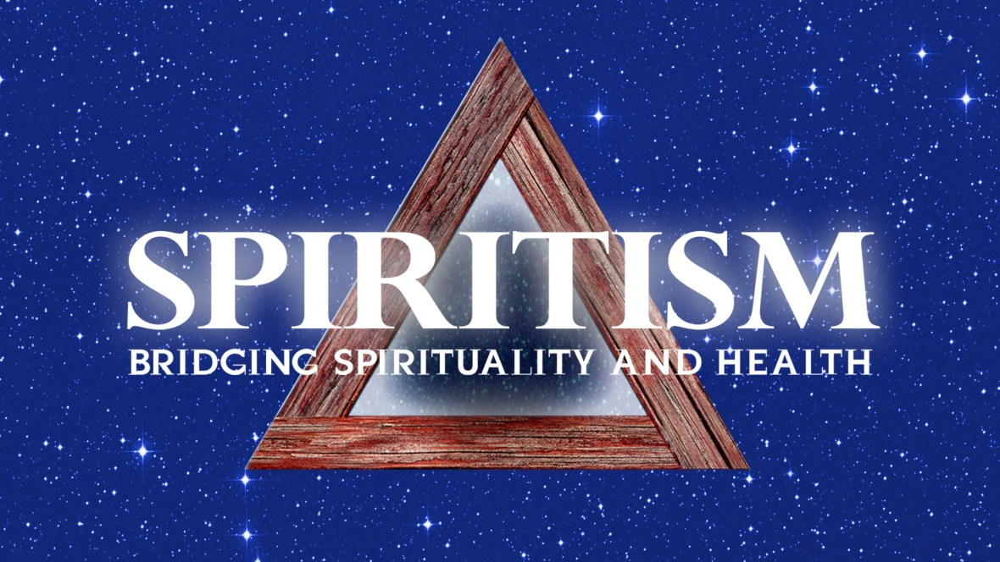

Spiritism
Spiritism is, at once, a science, a philosophy, and a religion. The science of Spiritism studies the existence and nature of spirits, which are nothing more than the immortal souls of men, created by God.
Spiritism helps us to understand the natural laws that govern that process of evolution. From a moral perspective, we follow the teachings and examples of Jesus Christ, as our model and guide.
The religious aspect stems from the moral ties between ourselves, and others, and the direction that Spiritism leads us, toward God, our creator, by helping us to understand life and by teaching us, ultimately, how to develop the ability to love, in the greatest sense of the word.

back